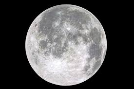

La Lune, unique satellite naturel de la Terre, influence les marées et stabilise l'inclinaison de notre planète.
Sa surface est marquée par des cratères d’impact et des mers lunaires (plaines basaltiques).
Elle est un objet d'exploration majeur et le seul corps céleste où l'homme a posé le pied.
* Type : Satellite naturel de la Terre
* Distance moyenne à la Terre : ~384 400 km
* Masse : 7,35×1022 kg
* Rayon : ~1 737 km
* Température de surface : de −173 °C (nuit) à 127 °C (jour)